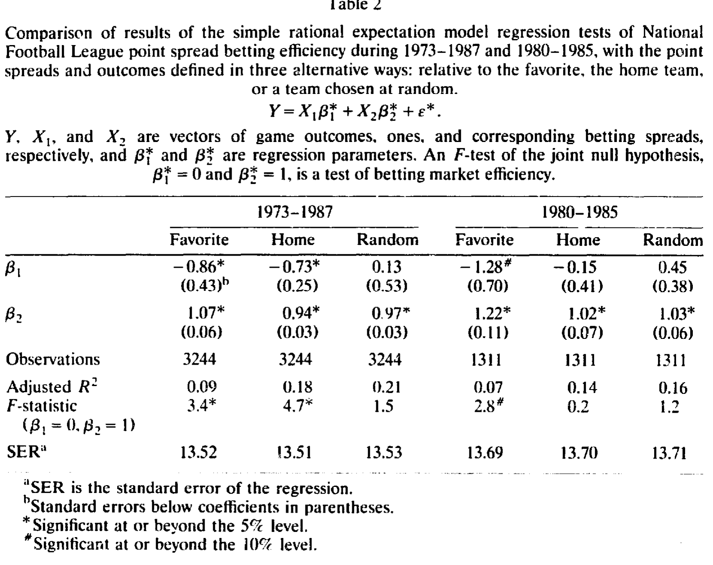
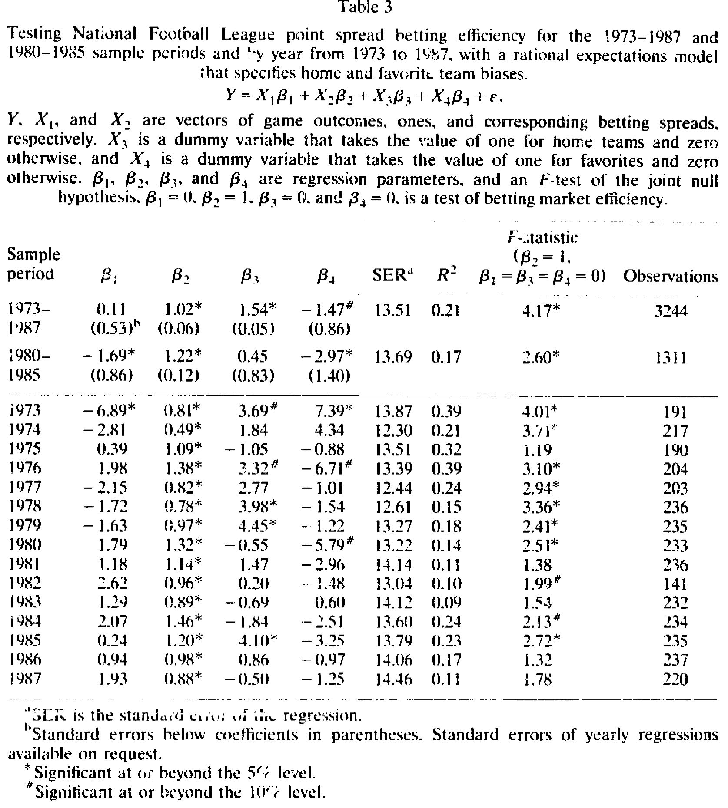
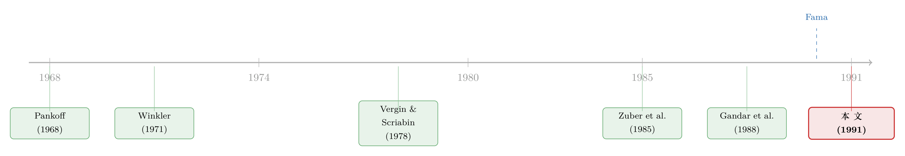

赌的不是球，是「定义」——一篇把市场有效性检验做强的论文
本文读的是 Golec & Tamarkin (1991, JFE)：橄榄球博彩市场到底有没有效率，过去十几年争来争去，结论全反——可能不是市场的问题，而是检验本身太弱。两位作者指出，老办法把「主场偏误」和「客场偏误」、把「热门偏误」和「冷门偏误」搅在一起取了平均，于是偏误互相抵消、回归系数被逼回「有效」的位置。只要往回归里加两个哑变量，把这些偏误一个个拆出来，NFL 市场里两条系统性偏误立刻现形：投注者长期低估了主场球队和冷门球队的相对实力。
1 一个让人困惑的开场
先说一个看上去很简单、却把学术界折腾了十几年的问题：赌球的人，是不是把价格定对了？
橄榄球博彩市场是检验市场有效性 (market efficiency) 的好地方。它和证券市场出奇地像：有公开信息，有大量参与者，也有职业玩家；1988 年仅拉斯维加斯一地就合法投注了 13 亿美元，全美非法投注更估计高达 260 亿。更妙的是，它比股市还「干净」——一旦下注，赔率和赔付就锁死了，不像证券价格那样会被后来的交易再搅动。庄家开出一个 点差 (point spread)，也就是市场预期热门队会赢冷门队多少分；你赌热门，是认为它被「低估」、会赢得比点差还多；你赌冷门，则是认为热门被「高估」。点差，就是这个市场的价格。
那么问题来了：这个价格，是不是冷门、热门两队真实强弱差距的无偏估计？
早期的研究给出的答案出奇一致——市场是有效的，拒绝不了。Pankoff (1968) 最早用一个简单的理性预期回归来检验；后来 Zuber, Gandar & Bowers (1985)、Sauer 等 (1988)、Gandar 等 (1988) 沿着同一条路走下去，用 NFL 数据反复跑回归，全都拒绝不了有效性。
可是，这个「有效」的结论一点都不让人踏实。因为另一拨人——那些真金白银下注的职业赌徒——一直在念叨两条经验法则：赌冷门（散户有「随大流」的毛病，总把钱压在热门队上），以及赌主场（散户低估了主场优势，Winkler (1971) 在一个受控实验里就发现受试者总是系统性地低估主场加成）。如果市场真有效，这两条法则不该能赚钱才对。
于是接着，一个自然的问题是：到底是市场真有效，还是我们的检验根本看不见偏误？
2 老办法错在哪：一道被「平均」掉的偏误
要回答这个问题，得先看清楚老办法长什么样。
市场有效，意味着收盘点差是两队强弱差距的无偏度量。把所有比赛的实际比分差 Y（结果）对点差 X₂ 做回归，再加一个截距 X₁（全 1 向量），就是过去所有研究用的「简单理性预期模型」：
$$ Y = X_1\beta_1^{*} + X_2\beta_2^{*} + \varepsilon^{*} $$
市场有效的联合原假设是 β₁* = 0 且 β₂* = 1：点差没有系统性的高估或低估，斜率恰好是 1。用一个 F 检验去检验这组约束，就完事了。
模型本身没错。错在哪？错在它只能装下一种偏误。作者一针见血地指出：当研究者心里其实揣着某种具体偏误时，这个模型的检验功效 (power) 低得可怜。原因，就藏在「聚合」(aggregation) 这两个字里。
这里是全文真正关键的一步。考虑主场偏误：对主场球队的偏误，等价于对客场球队的反向偏误。而一个随机抽取的样本里，大约一半是主场队、一半是客场队。于是一个正偏误和一个等大的负偏误撞在一起——平均下来，β₁* = 0。更糟的是，作者用「遗漏变量」的标准设定误差分析证明：当这些对冲掉的偏误被掩盖时，斜率 β₂* 会被推向 1。
换句话说，简单模型乖乖地交出 β₁* = 0、β₂* = 1，让你「拒绝不了有效性」——哪怕无效率明明存在。
这个逻辑可以写得更清楚一点。如果投注者真的偏好热门队，那么正确的模型里本该有一个热门哑变量 X₄（热门取 1，冷门取 0）：
$$ Y = X_1\beta_1 + X_2\beta_2 + X_4\beta_3 + \nu $$
把它从模型里漏掉，β₂* 就会染上一个偏误 B(\beta_2^{*}) = \pi\,\beta_3，这里 π 是样本中热门队的比例。如果全是热门队（π = 1），β₂* 就完整地「吃下」了被遗漏的 β₃；可一旦样本是一半热门、一半冷门（π = 1/2），热门偏误就被搅进斜率、把截距压向零——于是检验失去了拒绝有效性的力量。
所以「拒绝不了有效性」从来不等于「市场有效」。它也可能只是说：你这把尺子，根本量不出那道偏误。（关于「弱检验」如何把真实的无效率藏起来，也可参见《无风险的套利，要等多久才显形？——一把绕开「联合假设」的市场有效性尺子》。）
作者还顺手做了一个漂亮的演示：同一批 NFL 数据，他们用三种不同的「定义」去摆——按热门队定义、按主场队定义、按随机抽取的一队定义——然后都跑简单模型 (1)。结果如表 2 所示：1973–1987 年，按热门定义会拒绝有效性（F = 3.4，显著），按主场定义也拒绝（F = 4.7），可随机定义根本拒绝不了（F = 1.5）。

Table 2
这张表几乎是一记耳光。Gandar 等 (1988) 当年用的正是「按主场队定义」，所以他们只看见了主场那一条偏误；而如果他们换成「按热门队定义」，本会得出无效率的结论。同一份数据，换个定义，结论就翻面——简单模型一次只能照亮一条偏误，要想把主场、热门两条偏误同时看清，必须换模型。
3 真正关键的一步：把偏误一个个拆出来
那就把它们拆开。作者的做法朴素得近乎理所当然：往简单模型里再塞两个哑变量。X₃ 是主场哑变量（主场取 1，否则取 0），X₄ 是热门哑变量（热门取 1，否则取 0）。这就是本文的核心方程——模型 (2)：
现在，市场有效的联合原假设变成了四个约束：β₁ = 0、β₂ = 1、β₃ = 0、β₄ = 0。截距 β₁ 量的是「客场冷门队」的合并偏误，β₃、β₄ 分别量主场与热门偏误。漏掉 X₃ 或 X₄ 中任何一个，系数都会有偏、功效都会下降——这正是老办法的病根。
关键在于：哑变量让那些本会互相抵消的偏误，第一次被分别估了出来。它们不再在一个平均数里同归于尽。
结果立刻不一样了。NFL 数据，1973–1987 全样本（表 3）：主场系数 β₃ = 1.54（5% 显著），热门系数 β₄ = -1.47（10% 显著），两者量级几乎相等、方向相反；而截距 β₁ = 0.11、斜率 β₂ = 1.02，F = 4.17（显著），R² = 0.21，3244 场比赛。

Table 3
怎么解读这两个 1.5？作者提醒：哑变量系数等于「赌主场相对客场」或「赌热门相对冷门」的优劣势，而实际下注的优劣势只有它的一半。也就是说，赌主场冷门队平均能占到约 0.75 分的便宜，赌客场热门队则平均吃约 0.75 分的亏。于是统计上最好的赌法是主场冷门，最差的是客场热门；而主场热门和客场冷门，则是两笔公平的对赌。
更有意思的是这两条偏误的时间动态。逐年看下去：1973–1980 这八年里有七年拒绝有效，1981–1987 这七年只有三年拒绝——市场在变得更有效。但拆开看，两条偏误走的是相反的路：主场系数在 15 年里 10 年为正（5 年显著），1980 年后明显减弱、符号还变得飘忽，主场偏误几乎被消除了；热门系数 15 年里 12 年为负（2 年显著），符号相当稳定，而且量级还在变大——冷门偏误不降反升。1980–1985 子样本里，主场偏误已不显著（β₃ = 0.45），热门偏误却更强（β₄ = -2.97，显著）。所以这个阶段的法则很简单：赌冷门。
于是反转出现在大学橄榄球这边。出乎意料，大学市场比 NFL 更有效——至少就主场、热门这两类偏误而言。表 4 显示，1973–1987 全样本里，大学的主场系数（-0.07）和热门系数（0.89）都不显著，整整 15 年里没有一个主场或热门系数达到统计显著。这和拉斯维加斯庄家的说法对得上：NFL 吸引了更多不老练的散户，而大学市场由职业赌徒主导。
可这里藏着一个微妙的钩子：大学样本里，逐年的 F 检验除 1987 年外年年拒绝有效。明明主场、热门偏误都不显著，整体却被判无效——为什么？因为大学样本观测多（6514 场）、R² 高（约 0.46），更小的偏离就足以被检验抓住；而全样本截距勉强显著，暗示有某种未被指定的偏误在驱动这一拒绝。这恰恰反过来证明了作者的主张：统计检验比经济检验更强——它能因为那些你没事先猜到、写不进投注法则的偏误而拒绝有效，而基于「某条具体赌法赚不赚钱」的经济检验做不到这一点。
4 但赚不赚得到钱，是另一回事
找到偏误，和靠偏误赚钱，中间隔着一道叫交易成本的坎。
拉斯维加斯的规矩是：赢家每押一美元拿回两美元，输家除了本金还要再向庄家交 10% 的抽水（行话叫 vigorish）。平局则全部退还。算下来，一个策略至少要赢 52.4% 的注才能在付完抽水后保本。非法庄家可能把平局算作输、抽水提到 20%，那么保本胜率要 54.5%。再加上研究成本、以及在内华达州以外赌博的法律风险溢价，真正的盈亏平衡点还要更高。作者干脆把 52.4%–54.5% 当成一个「说不准」的区间，越过它，盈利才更有指望。
实际投注结果（论文表 5）和回归结论对得上：1973–1987 年，NFL 主场冷门是最优赌法。当平局算输时，主场冷门的盈利落在那个「说不准」区间里；当平局退还时，赌 NFL 主场冷门是唯一统计显著的盈利策略，胜率 55.6%（1973–1987）、58.1%（1973–1979）。但即便如此，用 52.4% 的二项参数去检验，这些胜率在 5% 水平上也未必显著。
所以本文最终落在一个克制而诚实的判断上：偏误确实存在，但量级很小；能否被有利可图地利用，取决于你假设自己付的是哪种交易成本——拉斯维加斯式的低成本、还是非法投注的高成本加法律风险溢价。统计上能测出无效率，不等于口袋里能多出钱。这与 Fama (1990) 的提醒一脉相承：在如此低的门槛下发现市场无效并不令人惊讶，真正重要的任务是去度量无效率的程度。
5 文献脉络
把这条线索摆开看，它其实是一部「检验如何一步步变强」的小史。
最早是 Pankoff (1968)，第一次把市场有效性的语言搬进橄榄球博彩。接着 Winkler (1971) 用受控实验给出了一块行为基石——人们系统性地低估主场优势；Jaffe & Winkler (1976) 则把博彩市场与证券市场的类比讲清楚，让这门生意正式进入金融学的视野。

然后是「经济检验」的年代：Vergin & Scriabin (1978) 报告了 1969–1974 年赌冷门可以盈利，可 Tryfos 等 (1984) 转身就证明同样的赌法在 1975–1981 年并不赚钱；Amoako-Adu, Marmer & Yagil (1985) 发现 1979–1981 年赌「主场冷门」有利可图。与此同时，「统计检验」这一支由 Zuber, Gandar & Bowers (1985) 和 Gandar 等 (1988) 推进，他们用简单回归反复检验，却总是拒绝不了有效，并据此判定回归检验「功效太弱、不如经济检验」。
本文 (1991) 站的正是这个「回归检验到底弱不弱」的争论点上，并给出了一个出人意料的反转：回归检验之所以弱，不是方法本身的问题，而是设定错了——把偏误聚合掉了。只要拆开偏误、再配上 15 年、近万场比赛的大样本，统计检验反而比经济检验更强。而 Fama (1990) 关于「度量无效率程度」的提法，则为全文定下了基调。
评论与延伸（Q&A + 研究方向）
（a）几个可能的疑问
Q：这和股市的「联合假设问题」是一回事吗？
不完全是。股市里的联合假设难题是「有效性 + 资产定价模型」捆绑不可分；这里没有定价模型的麻烦，点差是否无偏可以直接检验。本文揭示的是另一种、更隐蔽的毛病——设定误差：遗漏哑变量让对冲偏误互相抵消，从而系统性地拉低检验功效。它是计量层面的，而非理论层面的。
Q：为什么「随机定义」反而是问题，而不是更中性、更可取？
因为随机抽一队来定义
Y和X₂，恰好让样本一半热门一半主场，正负偏误正好对消。中性听起来公平，却让简单模型 (1) 的功效降到最低——这正是过去研究「拒绝不了有效」的技术根源。本文的纠正不是换更好的定义，而是把偏误显式建模出来。
Q：哑变量法看起来太朴素了，凭什么算贡献？
贡献不在技巧的花哨，而在于诊断的准确。作者用遗漏变量偏误的标准结论，证明了「为什么聚合会把
β₁*逼向 0、β₂*逼向 1」，再用同一份数据在三种定义下的对照（表 2）把这件事演示得无可辩驳。把一个被误读了十几年的「弱检验」之谜解释清楚，本身就是贡献。
Q：统计显著的偏误，凭什么说它「小」？
因为换算成实际下注优势只有约
0.75分，且能否盈利完全卡在52.4%–54.5%的交易成本区间上。多数策略的胜率落进这个「说不准」区间，只有 NFL 主场冷门在平局退还时勉强、且统计上还未必稳健地越线。统计显著 ≠ 经济可利用，这正是本文最克制的地方。
Q：大学市场主场/热门偏误都不显著，为什么还年年被判无效？
因为大学样本更大（
6514场）、R²更高（约0.46），更小的偏离也能被F检验捕捉；而全样本截距勉强显著，暗示存在某种未指定的偏误。这反而是作者想要的结果——它证明统计检验能逮住那些你写不进具体赌法的偏误，比经济检验更强。
Q：偏误会被市场自己消化掉吗？
部分会。主场偏误在 1980 年后几乎消失、符号变得不稳定，像是被套利和学习磨平了；但热门偏误符号稳定、量级反而变大。一个偏误被消除、另一个却加深，提醒我们「趋于有效」不是单调、整齐的过程。
（b）几个可能的研究问题与提案
-
把「定义即设定误差」搬到公司债流动性度量上。 【经济故事】本文的真正洞见是「你怎么定义变量，决定了你能看见哪条偏误」。公司债流动性研究里，买卖价差、价格冲击、零交易日等度量各自「定义」了不同的摩擦，彼此可能对冲。若把多种度量同时放进一个设定、像哑变量那样拆开，或许能识别出被单一度量平均掉的流动性偏误。 【可行性】中。需要 TRACE 逐笔成交数据与多套流动性度量，识别靠的是度量间的横截面对照，方法成熟、数据可得，难点在如何论证「对冲」的存在。
-
外资持有人是「主场」还是「客场」？把信息劣势拆成两条哑变量。 【经济故事】关于外资是否处于信息劣势，文献长期莫衷一是（可参见《外资真有「信息劣势」吗？——首尔交易簿里那 37 个基点的真相》）。本文提示：若把「外资 vs. 本土」和「机构 vs. 散户」两种身份当成相互对冲的哑变量同时放进收益回归，单看任一维度可能被平均成零。 【可行性】中。需要带交易者身份标签的成交簿（如新兴市场的外资板数据），识别清晰，难在数据获取。
-
逐年回归里的「偏误生命周期」：套利吃掉了哪条偏误？ 【经济故事】本文最迷人的事实是主场偏误消失、冷门偏误加深。若能找到「哪些偏误会被市场学习掉、哪些不会」的规律，对理解异象的衰减极有价值。 【可行性】高。本文已有 15 年逐年系数，扩展到更新的博彩数据或股市异象面板即可，纯统计、无需私有数据。
-
交易成本作为「有效性的调节器」：给统计无效率标一个经济价签。 【经济故事】本文最终落在「赚不赚得到，取决于你付哪种成本」。把交易成本显式写进检验，能把「统计无效」翻译成「经济上是否可利用」，这正是 Fama (1990) 想要的「度量程度」。 【可行性】高。博彩或微观结构数据里交易成本可观测，构造盈亏平衡胜率并检验是直接的。
参考文献
- Fama, Eugene F. (1990). Efficient capital markets: II. Working paper, University of Chicago.
- Gandar, John, Richard Zuber, Thomas O'Brien, and Ben Russo (1988). Testing market rationality in the point spread betting market. Journal of Finance 43(4), 995–1007.
- Golec, Joseph, and Maurry Tamarkin (1991). The degree of inefficiency in the football betting market: Statistical tests. Journal of Financial Economics 30(2), 311–323.
- Jaffe, Jeffrey F., and Robert L. Winkler (1976). Optimal speculation against an efficient market. Journal of Finance 31(1), 49–61.
- Pankoff, Lyn D. (1968). Market efficiency and football betting. Journal of Business 41(2), 203–214.
- Sauer, Raymond D., Vic Brajer, Stephen P. Ferris, and M. Wayne Marr (1988). Hold your bets: Another look at the efficiency of the gambling market for National Football League games. Journal of Political Economy 96(1), 206–213.
- Tryfos, Peter, S. Casey, S. Cook, G. Leger, and B. Pylypiak (1984). The profitability of wagers on NFL games. Management Science 30(1), 123–132.
- Vergin, Roger C., and Michael Scriabin (1978). Winning strategies for wagering on National Football League games. Management Science 24(8), 809–818.
- Winkler, Robert L. (1971). Probabilistic prediction: Some experimental results. Journal of the American Statistical Association 66(336), 675–685.
- Zuber, Richard A., John M. Gandar, and Benny D. Bowers (1985). Beating the spread: Testing the efficiency of the gambling market for NFL games. Journal of Political Economy 93(4), 800–806.